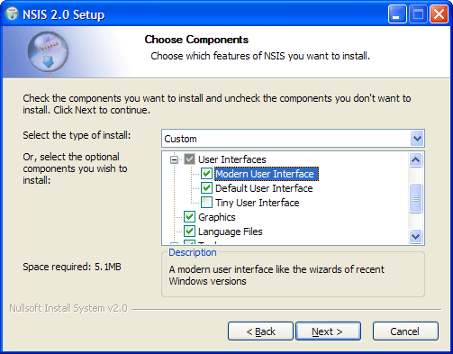

Introduction
The Modern UI provides a user interface for NSIS installers with a modern wizard style, similar to the wizards of recent Windows versions. It is based on the basic user interface that is provided by the NSIS compiler itself and extends it with more interface features and pages.
All standard NSIS pages (such as the pages to select components and the installation folder) are supported as well as a number of additional pages. The welcome page allows you to provide an introduction to the installation process, while the finish page provides a way to let the user decide what steps should be performed after the setup wizard is closed (for example, whether the application should be started immediately). A finish page can also be used to ask for a system restart is necessary.
Screenshots


Modern UI 2.0
This new version makes it easier to customize pages, because the same method can be used to change standard NSIS pages as well as additional pages provided by the Modern UI. It is now also possible for other NSIS plug-ins to add new pages to the Modern UI. You can expect to see examples of this soon.
The welcome and finish page are no longer implemented using InstallOptions. Instead, the new nsDialogs plug-in is used. nsDialogs allows you to create custom pages or customize existing pages directly from the script.
To upgrade a Modern UI 1.8 script, you should:
- Insert the MUI2.nsh header file instead of MUI.nsh.
- The macros for InstallOptions have been moved to a separate header file unrelated to the Modern UI. If you are still using InstallOptions for custom pages, insert InstallOptions.nsh and use the INSTALLOPTIONS_* macros instead of the MUI_INSTALLOPTIONS_* macros. The macros themselves have remained the same.
- Rewrite customization code for the Modern UI 1.8 welcome and finish pages in which the InstallOptions INI file is used. nsDialogs commands should be used instead.
- Use the standard NSIS method to escape special characters in all texts. For example, $\r$\n creates newline.
Script header
The settings for the Modern UI should be inserted in the header of the script file. It's important to follow the same order as the items below. For example, interface settings should be defined before you insert pages, because the pages depend on the interface configuration. It may be useful to look at the example scripts too see how this is done in actual script files.
Parameters are given in this format: required (option1 | option2) [optional]
1. Header file
First of all, add this line to the top of script to include the Modern UI:
!include MUI2.nsh
2. Interface configuration
Then, you may want to use interface settings to change the look and feel of the installer. These settings apply to all pages.
The interface settings provided by the NSIS compiler itself (such as LicenseText, Icon, CheckBitmap, InstallColors) should not be used in Modern UI scripts. The Modern UI provides equalivent or extended versions of these settings.
Examples:
!define MUI_COMPONENTSPAGE_SMALLDESC ;No value !define MUI_UI "myUI.exe" ;Value !define MUI_INSTFILESPAGE_COLORS "FFFFFF 000000" ;Two colors
Interface settings
Page header
MUI_ICON icon_file
The icon for the installer.
Default: ${NSISDIR}\Contrib\Graphics\Icons\modern-install.ico
MUI_UNICON icon_file
The icon for the uninstaller.
Default: ${NSISDIR}\Contrib\Graphics\Icons\modern-uninstall.ico
MUI_HEADERIMAGE
Display an image on the header of the page.
MUI_HEADERIMAGE_BITMAP bmp_file
Bitmap image to display on the header of installers pages (recommended size: 150x57
pixels).
Default: ${NSISDIR}\Contrib\Graphics\Header\nsis.bmp
MUI_HEADERIMAGE_BITMAP_NOSTRETCH
Do not stretch the installer header bitmap to fit the size of the field. Use this
option only if you have an image that does not use the whole space. If you have
a full size bitmap that fits exactly, you should not use this option because the
size of the field will be different if the user has a custom DPI setting.
MUI_HEADERIMAGE_BITMAP_RTL bmp_file
Bitmap image to display on the header of installers pages when using a RTL language
(recommended size: 150x57 pixels).
Default: Non-RTL bitmap
MUI_HEADERIMAGE_BITMAP_RTL_NOSTRETCH
Do not stretch the installer header bitmap when using a RTL language to fit the
size of the field. Use this option only if you have an image that does not use the
whole space. If you have a full size bitmap that fits exactly, you should not use
this option because the size of the field will be different if the user has a custom
DPI setting.
MUI_HEADERIMAGE_UNBITMAP bmp_file
Bitmap image to display on the header of uninstaller pages (recommended size: 150x57
pixels).
Default: Installer header bitmap
MUI_HEADERIMAGE_UNBITMAP_NOSTRETCH
Do not stretch the uninstaller header bitmap to fit the size of the field. Use this
option only if you have an image that does not use the whole space. If you have
a full size bitmap that fits exactly, you should not use this option because the
size of the field will be different if the user has a custom DPI setting.
MUI_HEADERIMAGE_UNBITMAP_RTL bmp_file
Bitmap image to display on the header of uninstallers pages when using a RTL language
(recommended size: 150x57 pixels).
Default: Installer RTL header bitmap
MUI_HEADERIMAGE_UNBITMAP_RTL_NOSTRETCH
Do not stretch the uninstaller header bitmap when using a RTL language to fit the
size of the field. Use this option only if you have an image that does not use the
whole space. If you have a full size bitmap that fits exactly, you should not use
this option because the size of the field will be different if the user has a custom
DPI setting.
MUI_HEADERIMAGE_RIGHT
Display the header image on the right side instead of the left side (when using
a RTL language it will be displayed on the left side instead of the right side).
MUI_BGCOLOR (color: RRGGBBR hexadecimal)
Background color for the header, the Welcome page and the Finish page.
Default: FFFFFF
MUI_HEADER_TRANSPARENT_TEXT
Set a transparent background for the header's label controls. Useful for custom
user interfaces that set a bigger header image.
Interface resources
MUI_UI ui_file
The interface file with the dialog resources. Change this if you have made your
own customized UI.
Default: ${NSISDIR}\Contrib\UIs\modern.exe
MUI_UI_HEADERIMAGE ui_file
The interface files with the dialog resource IDD_INST that contains a bitmap control
and space for the header bitmap.
Default: ${NSISDIR}\Contrib\UIs\modern_headerbmp.exe
MUI_UI_HEADERIMAGE_RIGHT ui_file
The interface files with the dialog resource IDD_INST that contains a bitmap control
and space for the header bitmap on the right side.
Default: ${NSISDIR}\Contrib\UIs\modern_headerbmpr.exe
MUI_UI_COMPONENTSPAGE_SMALLDESC ui_file
The interface files with a customized dialog resource IDD_SELCOM with a small description
area.
Default: ${NSISDIR}\Contrib\UIs\modern_smalldesc.exe
MUI_UI_COMPONENTSPAGE_NODESC ui_file
The interface files with a customized dialog resource IDD_SELCOM without a description
area.
Default: ${NSISDIR}\Contrib\UIs\modern_nodesc.exe
Installer welcome/finish page
MUI_WELCOMEFINISHPAGE_BITMAP bmp_file
Bitmap for the Welcome page and the Finish page (recommended size: 164x314 pixels).
Default: ${NSISDIR}\Contrib\Graphics\Wizard\win.bmp
MUI_WELCOMEFINISHPAGE_BITMAP_NOSTRETCH
Do not stretch the bitmap for the Welcome and Finish page to fit the size of the
field. Use this option only if you have an image that does not use the whole space.
If you have a full size bitmap that fits exactly, you should not use this option
because the size of the field will be different if the user has a custom DPI setting.
Uninstaller welcome/finish page
MUI_UNWELCOMEFINISHPAGE_BITMAP bmp_file
Bitmap for the Welcome page and the Finish page (recommended size: 164x314 pixels).
Default: ${NSISDIR}\Contrib\Graphics\Wizard\win.bmp
MUI_UNWELCOMEFINISHPAGE_BITMAP_NOSTRETCH
Do not stretch the bitmap for the Welcome and Finish page to fit the size of the
field. Use this option only if you have an image that does not use the whole space.
If you have a full size bitmap that fits exactly, you should not use this option
because the size of the field will be different if the user has a custom DPI setting.
License page
MUI_LICENSEPAGE_BGCOLOR (/windows | /grey |
(color: RRGGBB hexadecimal))
The background color for the license textbox. Use /windows for the Windows text
background color (usually white). Use the /grey for the window background color
(usually grey).
Default: /windows
Components page
MUI_COMPONENTSPAGE_CHECKBITMAP bitmap_file
The bitmap with images for the checks of the component select treeview.
Default: ${NSISDIR}\Contrib\Graphics\Checks\modern.bmp
MUI_COMPONENTSPAGE_SMALLDESC
A small description area on the bottom of the page. Use this layout if you have
a lot of sections and don't need large descriptions.
MUI_COMPONENTSPAGE_NODESC
No description area.
Directory page
MUI_DIRECTORYPAGE_BGCOLOR (color: RRGGBB hexadecimal)
The background color for the directory textbox.
Start Menu folder page
MUI_STARTMENUPAGE_BGCOLOR (color: RRGGBB hexadecimal)
The background color for the startmenu directory list and textbox.
Installation page
MUI_INSTFILESPAGE_COLORS (/windows | "(foreground
color: RRGGBB hexadecimal) (background color: RRGGBB hexadecimal)")
The colors of the details screen. Use /windows for the default Windows colors.
Default: /windows
MUI_INSTFILESPAGE_PROGRESSBAR (""
| colored | smooth)
The style of the progress bar. Colored makes it use the MUI_INSTALLCOLORS.
Default: smooth
Installer finish page
MUI_FINISHPAGE_NOAUTOCLOSE
Do not automatically jump to the finish page, to allow the user to check the install
log.
Uninstaller finish page
MUI_UNFINISHPAGE_NOAUTOCLOSE
Do not automatically jump to the finish page, to allow the user to check the uninstall
log.
Abort warning
MUI_ABORTWARNING
Show a message box with a warning when the user wants to close the installer.
MUI_ABORTWARNING_TEXT text
Text to display on the abort warning message box.
MUI_ABORTWARNING_CANCEL_DEFAULT
Set the Cancel button as the default button on the message box.
Uninstaller abort warning
MUI_UNABORTWARNING
Show a message box with a warning when the user wants to close the uninstaller.
MUI_UNABORTWARNING_TEXT text
Text to display on the abort warning message box.
MUI_UNABORTWARNING_CANCEL_DEFAULT
Set the Cancel button as the default button on the message box.
3. Pages
Insert the following macros to set the pages you want to use. The pages will appear in the order in which you insert them in the script. You can also insert custom Page commands between the macros to add custom pages.
You can add multiple pages of certain types (for example, if you want the user to specify multiple folders).
Examples:
!insertmacro MUI_PAGE_LICENSE "License.rtf" !insertmacro MUI_PAGE_COMPONENTS Var StartMenuFolder !insertmacro MUI_PAGE_STARTMENU "Application" $StartMenuFolder
You will need the page ID for the Start Menu folder page when using the Start Menu folder macros. The folder will be stored in the specified variable.
Installer pages
MUI_PAGE_WELCOME
MUI_PAGE_LICENSE textfile
MUI_PAGE_COMPONENTS
MUI_PAGE_DIRECTORY
MUI_PAGE_STARTMENU pageid variable
MUI_PAGE_INSTFILES
MUI_PAGE_FINISH
Uninstaller pages
MUI_UNPAGE_WELCOME
MUI_UNPAGE_CONFIRM
MUI_UNPAGE_LICENSE textfile
MUI_UNPAGE_COMPONENTS
MUI_UNPAGE_DIRECTORY
MUI_UNPAGE_INSTFILES
MUI_UNPAGE_FINISH
Page settings
Page settings apply to a single page and should be set before inserting a page macro. The same settings can be used for installer and uninstaller pages. You have to repeat the setting if you want it to apply to multiple pages. Example:
;Add a directory page to let the user specify a plug-ins folder ;Store the folder in $PluginsFolder Var PLUGINS_FOLDER !define MUI_DIRECTORYPAGE_VARIABLE $PluginsFolder !insertmacro MUI_PAGE_DIRECTORY
All standard texts in the user interface are loaded from language files, which are available for all languages supported by NSIS. So you only need to define these texts if you want to change the default.
If the parameter is a text that should be different for each language, define a language string using LangString and use $(LangStringName) as value. For a license text in multiple languages, LicenseLangString can be used. Refer the NSIS Users Manual for more information about installers with multiple languages.
In all text settings, the doublequote character (") should be escaped in the following form: $\"
General page settings
MUI_PAGE_HEADER_TEXT text
Text to display on the header of the page.
MUI_PAGE_HEADER_SUBTEXT text
Subtext to display on the header of the page.
Welcome page settings
MUI_WELCOMEPAGE_TITLE title
Title to display on the top of the page.
MUI_WELCOMEPAGE_TITLE_3LINES
Extra space for the title area.
MUI_WELCOMEPAGE_TEXT text
Text to display on the page.
License page settings
MUI_LICENSEPAGE_TEXT_TOP text
Text to display on the top of the page.
MUI_LICENSEPAGE_TEXT_BOTTOM text
Text to display on the bottom of the page.
MUI_LICENSEPAGE_BUTTON button_text
Text to display on the 'I Agree' button.
MUI_LICENSEPAGE_CHECKBOX
Display a checkbox the user has to check to agree with the license terms.
MUI_LICENSEPAGE_CHECKBOX_TEXT text
Text to display next to the checkbox to agree with the license terms.
MUI_LICENSEPAGE_RADIOBUTTONS
Display two radio buttons to allow the user to choose between accepting the license
terms or not.
MUI_LICENSEPAGE_RADIOBUTTONS_TEXT_ACCEPT text
Text to display next to the checkbox to accept the license terms.
MUI_LICENSEPAGE_RADIOBUTTONS_TEXT_DECLINE text
Text to display next to the checkbox to decline the license terms.
Components page settings
MUI_COMPONENTSPAGE_TEXT_TOP text
Text to display on the top of the page.
MUI_COMPONENTSPAGE_TEXT_COMPLIST text
Text to display on next to the components list.
MUI_COMPONENTSPAGE_TEXT_INSTTYPE text
Text to display on next to the installation type combo box.
MUI_COMPONENTSPAGE_TEXT_DESCRIPTION_TITLE text
Text to display on the of the top of the description box.
MUI_COMPONENTSPAGE_TEXT_DESCRIPTION_INFO text
Text to display inside the description box when no section is selected.
Directory page settings
MUI_DIRECTORYPAGE_TEXT_TOP text
Text to display on top of the page.
MUI_DIRECTORYPAGE_TEXT_DESTINATION text
Text to display on the destination folder frame.
MUI_DIRECTORYPAGE_VARIABLE variable
Variable in which to store the selected folder.
Default: $INSTDIR
MUI_DIRECTORYPAGE_VERIFYONLEAVE
Does not disable the Next button when a folder is invalid but allows you to use
GetInstDirError in the leave function to handle an invalid folder.
Start Menu folder page settings
MUI_STARTMENUPAGE_TEXT_TOP text
Text to display on the top of the page.
MUI_STARTMENUPAGE_TEXT_CHECKBOX text
Text to display next to the checkbox to disable the Start Menu folder creation.
MUI_STARTMENUPAGE_DEFAULTFOLDER folder
The default Start Menu Folder.
MUI_STARTMENUPAGE_NODISABLE
Do not display the checkbox to disable the creation of Start Menu shortcuts.
MUI_STARTMENUPAGE_REGISTRY_ROOT root
MUI_STARTMENUPAGE_REGISTRY_KEY key
MUI_STARTMENUPAGE_REGISTRY_VALUENAME value_name
The registry key to store the Start Menu folder. The page will use it to remember
the users preference. You should also use for the uninstaller to remove the Start
Menu folders. Don't forget to remove this key during uninstallation.
For the uninstaller, use the MUI_STARTMENU_GETFOLDER macro to get the Start Menu folder:
!insertmacro MUI_STARTMENU_GETFOLDER page_id $R0 Delete "$SMPROGRAMS\$R0\Your Shortcut.lnk"
Installation page settings
MUI_INSTFILESPAGE_FINISHHEADER_TEXT text
Text to display on the header of the installation page when the installation has
been completed (won't be displayed when using a Finish page without MUI_(UN)FINISHPAGE_NOAUTOCLOSE).
MUI_INSTFILESPAGE_FINISHHEADER_SUBTEXT text
Subtext to display on the header of the installation page when the installation
has been completed (won't be displayed when using a Finish page without MUI_(UN)FINISHPAGE_NOAUTOCLOSE).
MUI_INSTFILESPAGE_ABORTHEADER_TEXT text
Text to display on the header of the installation page when the installation has
been aborted.
MUI_INSTFILESPAGE_ABORTHEADER_SUBTEXT text
Subext to display on the header of the installation page when the installation has
been aborted.
Finish page settings
MUI_FINISHPAGE_TITLE title
Title to display on the top of the page.
MUI_FINISHPAGE_TITLE_3LINES
Extra space for the title area.
MUI_FINISHPAGE_TEXT text
Text to display on the page.
MUI_FINISHPAGE_TEXT_LARGE
Extra space for the text area (if using checkboxes).
MUI_FINISHPAGE_BUTTON text
Text to display on the Finish button.
MUI_FINISHPAGE_CANCEL_ENABLED
Enable the Cancel button so the user can skip any options displayed on the finish
page.
MUI_FINISHPAGE_TEXT_REBOOT text
Text to display on the finish page when asking for a system reboot.
MUI_FINISHPAGE_TEXT_REBOOTNOW text
Text to display next to the 'Reboot now' option button.
MUI_FINISHPAGE_TEXT_REBOOTLATER text
Text to display next to the 'Reboot later' option button.
MUI_FINISHPAGE_REBOOTLATER_DEFAULT
Sets the 'Reboot later' option as the default option.
MUI_FINISHPAGE_RUN exe_file
Application which the user can select to run using a checkbox. You don't need to
put quotes around the filename when it contains spaces.
MUI_FINISHPAGE_RUN_TEXT text
Texts to display next to the 'Run program' checkbox.
MUI_FINISHPAGE_RUN_PARAMETERS parameters
Parameters for the application to run. Don't forget to escape double quotes in the
value (use $\").
MUI_FINISHPAGE_RUN_NOTCHECKED
Do not check the 'Run program' checkbox by default
MUI_FINISHPAGE_RUN_FUNCTION function
Call a function instead of executing an application (define MUI_FINISHPAGE_RUN without
parameters). You can use the function to execute multiple applications or you can
change the checkbox name and use it for other things.
MUI_FINISHPAGE_SHOWREADME file/url
File or website which the user can select to view using a checkbox. You don't need
to put quotes around the filename when it contains spaces.
MUI_FINISHPAGE_SHOWREADME_TEXT text
Texts to display next to the 'Show Readme' checkbox.
MUI_FINISHPAGE_SHOWREADME_NOTCHECKED
Do not check the 'Show Readme' checkbox by default
MUI_FINISHPAGE_SHOWREADME_FUNCTION function
Call a function instead of showing a file (define MUI_FINISHPAGE_SHOWREADME without
parameters). You can use the function to show multiple files or you can change the
checkbox name and use it for other things.
MUI_FINISHPAGE_LINK link_text
Text for a link on the which the user can click to view a website or file.
MUI_FINISHPAGE_LINK_LOCATION file/url
Website or file which the user can select to view using the link. You don't need
to put quotes around the filename when it contains spaces.
MUI_FINISHPAGE_LINK_COLOR (color: RRGGBB hexadecimal)
Text color for the link on the Finish page.
Default: 000080
MUI_FINISHPAGE_NOREBOOTSUPPORT
Disables support for the page that allows the user to reboot the system. Define
this option to save some space if you are not using the /REBOOTOK flag or SetRebootFlag.
Uninstall confirm page settings
MUI_UNCONFIRMPAGE_TEXT_TOP text
Text to display on the top of the page.
MUI_UNCONFIRMPAGE_TEXT_LOCATION text
Text to display next to the uninstall location text box.
4. Language files
Insert the Modern UI language files for the languages to want to include.
!insertmacro MUI_LANGUAGE "English"
The standard NSIS language files are loaded automatically, there is no need to use LoadLanguageFile.
5. Reserve files
If you are using solid compression, files that are required before the actual installation should be stored first in the data block, because this will make your installer start faster. Include reserve file commands for such files before your sections and functions:
ReserveFile MyPlugin.dll !insertmacro MUI_RESERVEFILE_LANGDLL ;Language selection dialog ...
Script code for pages
Some pages allow you to show additional information or can be used to get user input. Here you can find the script code to use these features.
Components page descriptions
The Modern UI components page has a text box in which a description can be shown when the user hovers the mouse over a component. If you don't want to use these descriptions, insert the MUI_COMPONENTSPAGE_NODESC interface setting.
To set a description for a section, an additional parameter needs to be added to Section commmand with a unique identifier for the section. This name can later be used to set the description for this section.
Section "Section Name 1" Section1 ... SectionEnd
After the sections, use these macros to set the descriptions:
LangString DESC_Section1 ${LANG_ENGLISH} "Description of section 1."
LangString DESC_Section2 ${LANG_ENGLISH} "Description of section 2."
!insertmacro MUI_FUNCTION_DESCRIPTION_BEGIN
!insertmacro MUI_DESCRIPTION_TEXT ${Section1} $(DESC_Section1)
!insertmacro MUI_DESCRIPTION_TEXT ${Section2} $(DESC_Section2)
!insertmacro MUI_FUNCTION_DESCRIPTION_END
For the uninstaller, use the MUI_UNFUNCTION_DESCRIPTION_BEGIN and MUI_UNFUNCTION_DESCRIPTION_END macros.
Start Menu folder
Put the code to write the shortcuts (using CreateShortcut) between the MUI_STARTMENU_WRITE_BEGIN and MUI_STARTMENU_WRITE_END macros:
!insertmacro MUI_STARTMENU_WRITE_BEGIN pageid ...create shortcuts... !insertmacro MUI_STARTMENU_WRITE_END
The page ID should be the ID of the page on which the user has selected the folder for the shortcuts you want to write.
The variable which contains the folder and the page ID are set as parameters of the page macro.
Language selection dialog
If you want the installer to display a language selection dialog (see the the MultiLanguage.nsi example), insert the MUI_LANGDLL_DISPLAY macro in the .onInit function:
Function .onInit !insertmacro MUI_LANGDLL_DISPLAY FunctionEnd
This macro can also be used in the un.onInit function.
Settings for registry storage of selected language
To remember the user's preference, you can define a registry key. These defines should be set before inserting the installation page macro.
MUI_LANGDLL_REGISTRY_ROOT root
MUI_LANGDLL_REGISTRY_KEY key
MUI_LANGDLL_REGISTRY_VALUENAME value_name
The registry key to store the language. The users preference will be remembered.
You can also use it for the uninstaller to display the right language. Don't forget
to remove this key in the uninstaller.
For the uninstaller, insert the MUI_UNGETLANGUAGE macro in un.onInit to get the stored language preference:
Function un.onInit !insertmacro MUI_UNGETLANGUAGE FunctionEnd
Interface settings for selection dialog
To customize the language selection dialog interface, use these defines before inserting the MUI_LANGDLL_DISPLAY macro.
MUI_LANGDLL_WINDOWTITLE text
The window title of the language selection dialog.
MUI_LANGDLL_INFO text
The text to display on the language selection dialog.
MUI_LANGDLL_ALWAYSSHOW
Always show the language selection dialog, even if a language has been stored in
the registry. The language stored in the registry will be selected by default.
MUI_LANGDLL_ALLLANGUAGES
Always show all available languages and don't filter according to their codepage.
Custom pages
If you want add your custom pages to your installer, you can insert your own page commands between the page macros.
!insertmacro MUI_PAGE_WELCOME Page custom FunctionName ;Custom page !insertmacro MUI_PAGE_COMPONENTS ;Uninstaller !insertmacro MUI_UNPAGE_CONFIRM UninstPage custom un.FunctionName ;Custom page !insertmacro MUI_UNPAGE_INSTFILES
Use the MUI_HEADER_TEXT macro to set the text on the page header in a page function:
LangString PAGE_TITLE ${LANG_ENGLISH} "Title"
LangString PAGE_SUBTITLE ${LANG_ENGLISH} "Subtitle"
Function CustomPageFunction
!insermacro MUI_HEADER_TEXT $(PAGE_TITLE) $(PAGE_SUBTITLE)
...
FuctionEnd
Custom functions
Interface functions provided by NSIS, like the .onGUIInit function and the page functions are automatically included by the Modern UI and filled with code to support new interface features. If you want to add additional code to these function, create a function with the custom script code in the script use the Modern UI functions call them.
Example:
!define MUI_CUSTOMFUNCTION_GUIINIT myGuiInit Function myGUIInit ... FunctionEnd
Modern UI pages can also customized using custom functions.
General Custom Functions
These defines should be set before inserting the language macros.
MUI_CUSTOMFUNCTION_GUIINIT function
MUI_CUSTOMFUNCTION_UNGUIINIT function
MUI_CUSTOMFUNCTION_ABORT function
MUI_CUSTOMFUNCTION_UNABORT function
MUI_CUSTOMFUNCTION_ONMOUSEOVERSECTION function
MUI_CUSTOMFUNCTION_UNONMOUSEOVERSECTION function
Mouse over functions are only available when the description macros (MUI_FUNCTION_DESCRIPTION_BEGIN) are used. When component page descriptions are not used, regular .onMouseOverSection and un.onMouseOverSection must be used.
Page Custom Functions
These defines should be set before inserting a page macro.
MUI_PAGE_CUSTOMFUNCTION_PRE function
MUI_PAGE_CUSTOMFUNCTION_SHOW function
MUI_PAGE_CUSTOMFUNCTION_LEAVE function
The pre function is called first and allows you to initalize variables or decide whether the page should be skipped. Then, the show function is called, which can be used to customize the interface. Finally, the user input can be validated in the leave function. The NSIS Users Manual provides more information about these functions.
In the show function, the window handles of all controls on the page can be retrieved from a Modern UI variable. A list of the variables names is not yet available. For now, refer to the source files of the Modern UI 2.0. The variable declarations can be found in the first lines of the header file for a certain page.
Example scripts
Basic: Basic.nsi
Welcome/Finish page: WelcomeFinish.nsi
Multiple languages: MultiLanguage.nsi
Header image: HeaderBitmap.nsi
Start Menu Folder page: StartMenu.nsi
Credits
Written by Joost Verburg.
Icons designed by Nikos Adamamas, aka adni18.
Thanks to Amir Szekely, aka KiCHiK, for his work on NSIS to make this possible.
License
The zlib/libpng license applies to the Modern UI.
License Terms
Copyright © 2002-2009 Joost Verburg This software is provided 'as-is', without any express or implied warranty. In no event will the authors be held liable for any damages arising from the use of this software. Permission is granted to anyone to use this software for any purpose, including commercial applications, and to alter it and redistribute it freely, subject to the following restrictions: 1. The origin of this software must not be misrepresented; you must not claim that you wrote the original software. If you use this software in a product, an acknowledgment in the product documentation would be appreciated but is not required. 2. Altered versions must be plainly marked as such, and must not be misrepresented as being the original software. 3. This notice may not be removed or altered from any distribution.